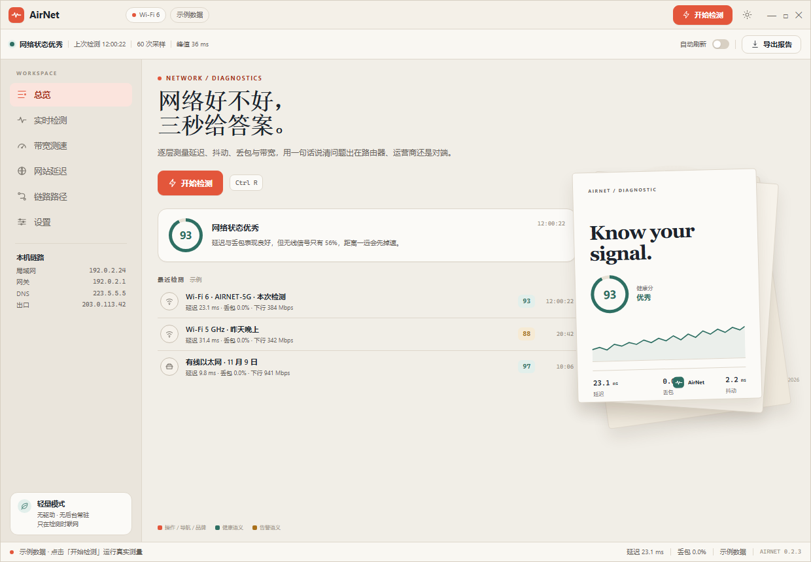

AIRNET / THEME PROPOSAL
浅色改用 AirPDF 的暖橙，深色保持现状。
橙色只负责「品牌、主操作、导航选中、扫描动效」；健康分、良好、告警、异常仍用语义色，避免把“健康”和“警告”混成同一个橙。深色方案完全不动。
LIGHT PROPOSED
橙色操作 + 青绿语义

DARK UNCHANGED
保持当前深色样式

Accent
#E3563BAccent hover
#C9482FAccent soft
#FBE4DDGood semantic
#2E6F63Warn semantic
#A9701ADark accent
#69B3A4为什么不全橙：AirNet 的 93 分、良好、延迟正常是健康语义，不是主操作。若把评分环、良好 badge 也改成橙色，会与「警告/异常」的橙红挤在一起，用户反而读不出好坏。建议只把橙色用于可点击/品牌层。
深色保持不变：深色仍用墨蓝底 + 青绿 accent
#69B3A4，不引入橙色；切主题时只有浅色变化，视觉记忆更稳定。